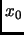
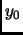
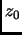

The entries Swap XY, Swap XZ, and Swap YZ are used to internally swap the coordinate values with each other, so that for instance a particle at the position (, , ) is moved to the position (, , ).